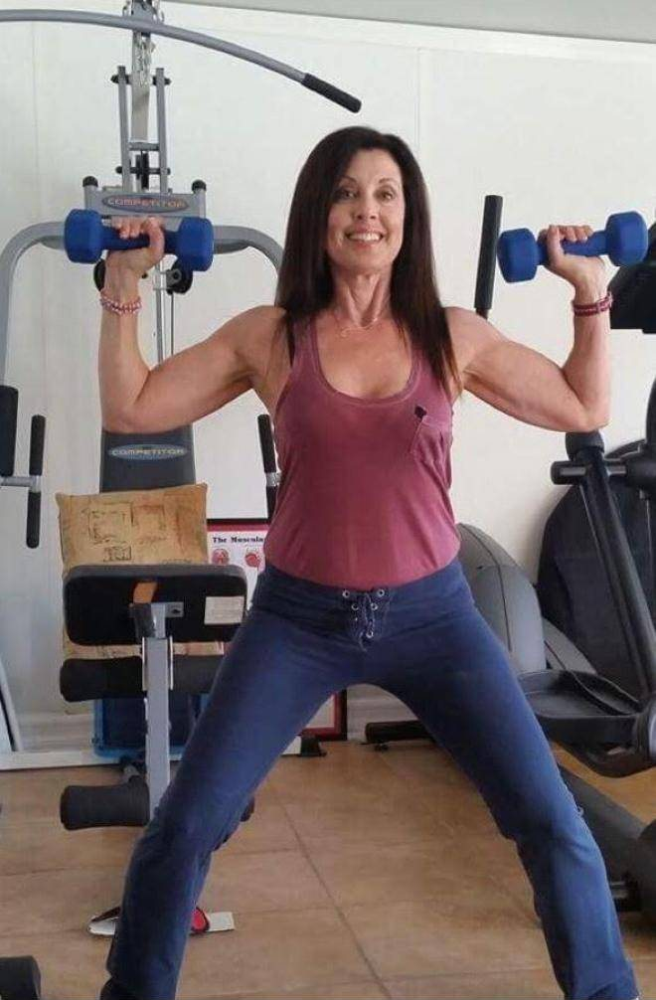
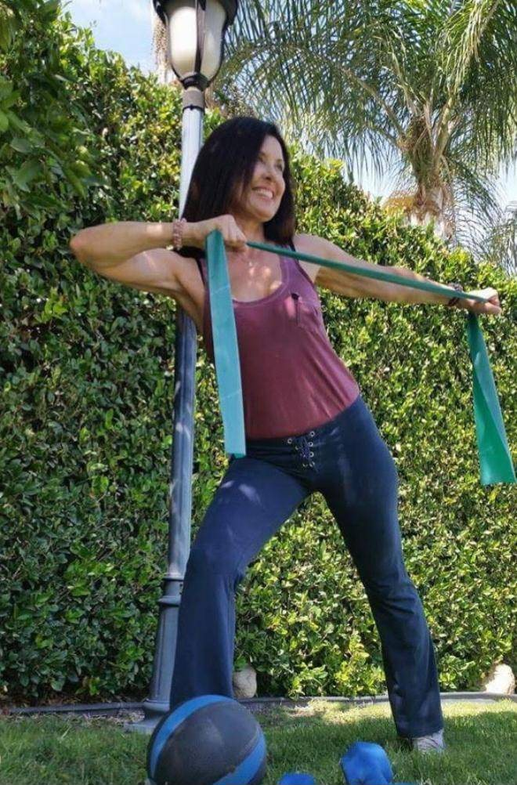
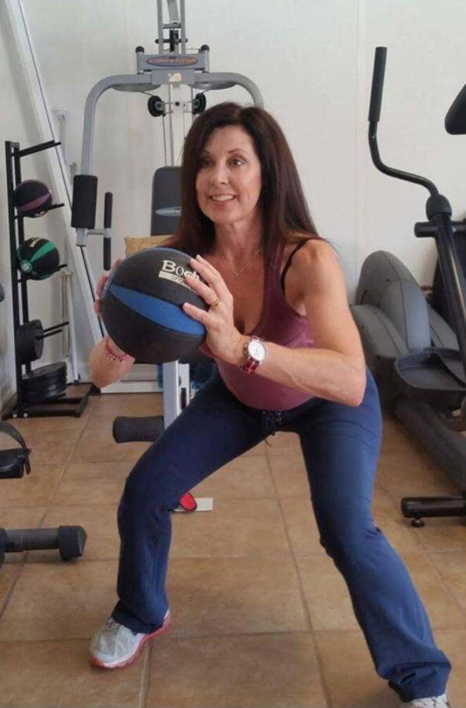
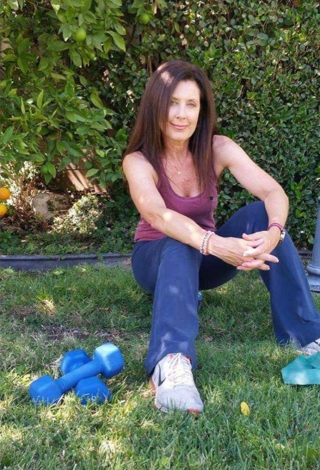
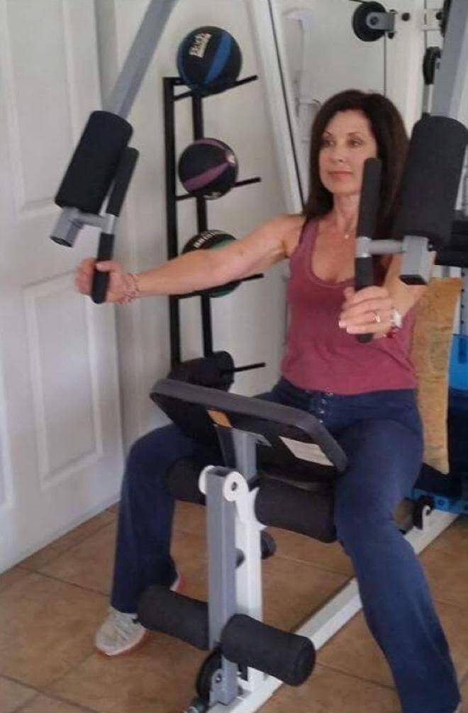
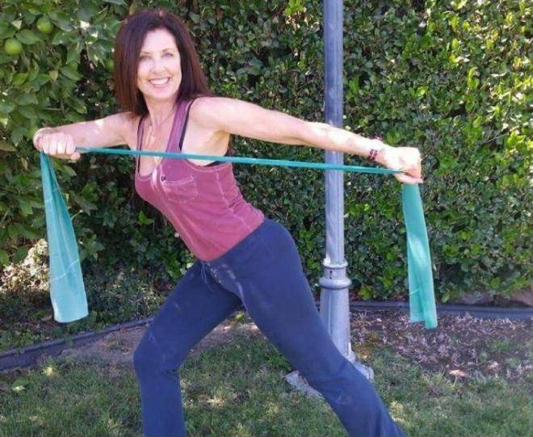
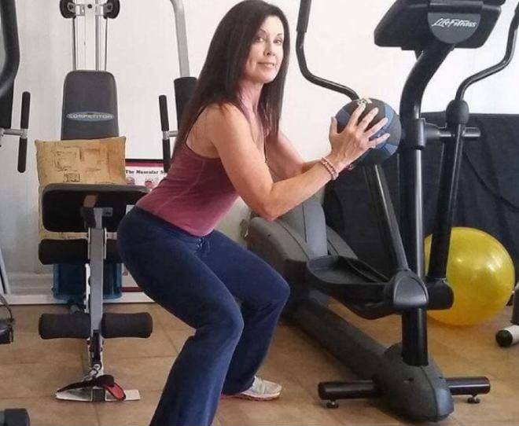
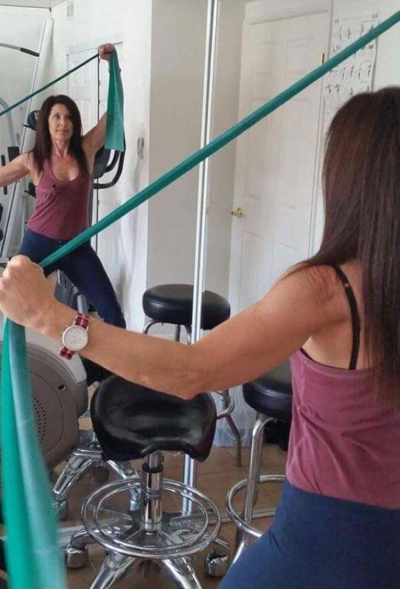
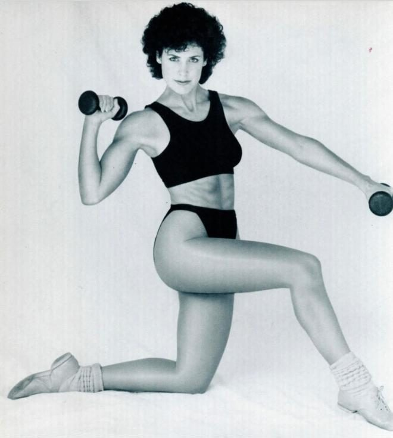

<title>Bodi Roc Personal Fitness</title>
<meta name="claude:viewport-fit-sides" content="cover">
<meta name="robots" content="noindex">
<meta name="description" content="Bodi Roc, a Total Fitness Concept since 1981. Shelly Shubert, Certified Exercise Physiologist, is one of Hollywood's most professionally experienced personal fitness trainers. Calabasas, CA.">
<link rel="preconnect" href="https://fonts.googleapis.com">
<link rel="preconnect" href="https://fonts.gstatic.com" crossorigin>
<link rel="stylesheet" href="https://fonts.googleapis.com/css2?family=Barlow+Condensed:ital,wght@0,500;0,700;0,800;1,600&family=Libre+Franklin:ital,wght@0,400;0,500;0,600;1,400&display=swap">
<style>
/* Layout: one long page in training "sets" — bold condensed headings, a maroon brand band for the coaching cue, photo plates beside readable text columns. */
:root{
  --bg:#f6f3f4; --surface:#ffffff; --ink:#22161a; --muted:#6c5d62; --line:#e2d8db;
  --brand:#6e0e28; --brand-ink:#ffffff; --brand-soft:#f1e3e7; --plate:#ffffff;
  --display:"Barlow Condensed","Arial Narrow",Arial,sans-serif;
  --body:"Libre Franklin",system-ui,-apple-system,"Segoe UI",sans-serif;
  --wrap:1120px;
}
@media (prefers-color-scheme: dark){:root:not([data-theme="light"]){
  --bg:#161013; --surface:#20181b; --ink:#f2eaec; --muted:#b6a5ab; --line:#3a2d32;
  --brand:#c8486a; --brand-ink:#1a0a10; --brand-soft:#2c1a20; --plate:#f4f0f1; color-scheme:dark}}
:root[data-theme="dark"]{
  --bg:#161013; --surface:#20181b; --ink:#f2eaec; --muted:#b6a5ab; --line:#3a2d32;
  --brand:#c8486a; --brand-ink:#1a0a10; --brand-soft:#2c1a20; --plate:#f4f0f1; color-scheme:dark}

*{box-sizing:border-box}
html{scroll-behavior:smooth}
@media (prefers-reduced-motion:reduce){html{scroll-behavior:auto}}
body{background:var(--bg);color:var(--ink);font:400 17px/1.65 var(--body);margin:0}
a{color:var(--brand)}
a:focus-visible,button:focus-visible,input:focus-visible,textarea:focus-visible{outline:3px solid var(--brand);outline-offset:2px}
.wrap{max-width:var(--wrap);margin:0 auto;padding-left:max(20px,env(safe-area-inset-left,0px));padding-right:max(20px,env(safe-area-inset-right,0px))}
h1,h2,h3{font-family:var(--display);line-height:1.02;margin:0;text-wrap:balance;letter-spacing:.005em}
h2{font-size:clamp(2.4rem,5.5vw,3.6rem);font-weight:800;text-transform:uppercase}
.eyebrow{font:700 .8rem/1 var(--body);letter-spacing:.16em;text-transform:uppercase;color:var(--brand);margin:0 0 .9rem}
p{margin:0}
.prose{display:grid;gap:1.1em;max-width:64ch}
.mark{display:block;background:var(--brand);-webkit-mask:var(--src) center/contain no-repeat;mask:var(--src) center/contain no-repeat}

/* header */
body::before{content:"";position:fixed;inset:0 0 auto;height:env(safe-area-inset-top,0px);z-index:10;background:var(--bg)}
header.top{position:sticky;top:env(safe-area-inset-top,0px);z-index:5;background:color-mix(in srgb,var(--bg) 88%,transparent);backdrop-filter:blur(10px);border-bottom:1px solid var(--line)}
header.top .wrap{display:flex;align-items:center;justify-content:space-between;gap:16px;padding-block:12px}
.brand{display:flex;align-items:center;gap:10px;text-decoration:none}
.brand .fig{--src:url(img/figure.png);width:22px;height:30px}
.brand .word{--src:url(img/wordmark.png);width:112px;height:29px}
nav ul{display:flex;gap:clamp(12px,3vw,28px);list-style:none;margin:0;padding:0}
nav a{font:600 .82rem/1 var(--body);letter-spacing:.12em;text-transform:uppercase;color:var(--ink);text-decoration:none;padding:6px 0}
nav a:hover{color:var(--brand)}
@media (max-width:560px){nav .opt{display:none}}

/* hero */
.hero .wrap{display:grid;grid-template-columns:minmax(0,1.15fr) minmax(0,.85fr);gap:clamp(24px,5vw,64px);align-items:center;padding-block:clamp(40px,7vw,88px)}
.lockup{display:flex;align-items:flex-end;gap:clamp(6px,1.2vw,14px);margin-bottom:clamp(22px,3vw,34px)}
.lockup .fig{--src:url(img/figure.png);width:clamp(84px,13vw,150px);aspect-ratio:610/844;height:auto;flex:none}
.lockup .word{--src:url(img/wordmark.png);width:clamp(210px,38vw,460px);aspect-ratio:625/162;height:auto;margin-bottom:clamp(14px,2.4vw,30px);max-width:100%}
.hero h1{font-size:clamp(2.2rem,5.2vw,3.8rem);font-weight:800;text-transform:uppercase;line-height:.95}
.hero h1 em{font-style:italic;font-weight:600;color:var(--brand);text-transform:none}
.hero .lede{margin-top:1.4rem;font-size:1.15rem;color:var(--muted);max-width:44ch}
.cta{display:flex;flex-wrap:wrap;gap:12px;margin-top:2rem}
.btn{display:inline-flex;align-items:center;gap:8px;font:700 .95rem/1 var(--body);letter-spacing:.06em;text-transform:uppercase;padding:15px 22px;border-radius:2px;text-decoration:none;border:2px solid var(--brand);cursor:pointer}
.btn.solid{background:var(--brand);color:var(--brand-ink)}
.btn.ghost{color:var(--brand);background:transparent}
.hero-photo{position:relative;justify-self:end;width:min(100%,420px)}
.hero-photo{aspect-ratio:2/3;max-width:100%}
.hero-photo img{position:absolute;inset:0;display:block;width:100%;height:100%;object-fit:cover;border:1px solid var(--line);opacity:0;transition:opacity 1.2s ease}
.hero-photo img.on{opacity:1}
.hero-photo .stamp{position:absolute;z-index:1;left:-18px;bottom:22px;background:var(--brand);color:var(--brand-ink);font:800 1.05rem/1 var(--display);letter-spacing:.08em;text-transform:uppercase;padding:12px 16px}
.hero-photo .stamp b{display:block;font-size:2.4rem;letter-spacing:0}

/* creds strip */
.creds{border-block:1px solid var(--line);background:var(--surface)}
.creds ul{list-style:none;margin:0;padding-block:22px;display:grid;grid-template-columns:repeat(4,minmax(0,1fr));gap:20px}
.creds li{display:grid;gap:4px;min-width:0}
.creds strong{font:700 1.15rem/1.15 var(--display);letter-spacing:.02em;text-transform:uppercase}
.creds span{font-size:.86rem;color:var(--muted);line-height:1.4}
@media (max-width:820px){.creds ul{grid-template-columns:repeat(2,minmax(0,1fr))}}

section.block{padding-block:clamp(56px,8vw,104px)}
.strip{overflow:hidden;padding-block:clamp(28px,4vw,44px) 0}
.track{display:flex;gap:12px;width:max-content;animation:slide 60s linear infinite}
.track img{height:clamp(200px,28vw,300px);width:auto;max-width:none;display:block;object-fit:cover}
.strip:hover .track{animation-play-state:paused}
@keyframes slide{to{transform:translateX(-50%)}}
@media (prefers-reduced-motion:reduce){.track{animation:none}.strip{overflow-x:auto}}

/* specialties */
.spec-grid{display:grid;grid-template-columns:minmax(0,.8fr) minmax(0,1.2fr);gap:clamp(24px,5vw,64px);align-items:start}
.areas{display:grid;grid-template-columns:repeat(5,minmax(0,1fr));border-top:3px solid var(--ink);margin-top:2rem}
.areas div{padding:14px 12px 0 0;min-width:0}
.areas b{display:block;font:800 1.5rem/1 var(--display);text-transform:uppercase}
.areas small{color:var(--muted);font-size:.82rem}
.tags{display:flex;flex-wrap:wrap;gap:8px;margin-top:1.4rem}
.tags li{list-style:none;border:1px solid var(--line);background:var(--surface);padding:7px 12px;font-size:.9rem;border-radius:2px}
.tags{padding:0}
@media (max-width:760px){.areas{grid-template-columns:repeat(2,minmax(0,1fr));row-gap:16px}}

/* coaching cue band */
.cue{background:var(--brand);color:var(--brand-ink)}
.cue .wrap{padding-block:clamp(48px,7vw,84px);display:grid;grid-template-columns:auto minmax(0,1fr);gap:clamp(20px,4vw,48px);align-items:center}
.counter{font:800 clamp(5rem,14vw,9rem)/.8 var(--display);font-variant-numeric:tabular-nums;opacity:.95;min-width:1.2ch;text-align:center}
.cue blockquote{margin:0;font:600 italic clamp(1.5rem,3.4vw,2.3rem)/1.2 var(--display)}
.cue cite{display:block;margin-top:1rem;font:500 .85rem/1 var(--body);letter-spacing:.14em;text-transform:uppercase;font-style:normal;opacity:.85}

/* about */
.about-grid{display:grid;grid-template-columns:minmax(0,1fr) minmax(0,340px);gap:clamp(28px,5vw,72px);align-items:start}
.about-grid aside{display:grid;gap:20px;position:sticky;top:90px}
.plate{background:var(--plate);border:1px solid var(--line);padding:10px}
.plate img{display:block;width:100%;height:auto}
.plate figcaption{font-size:.8rem;color:#5b4b50;padding-top:8px}
figure{margin:0}
.pull{border-left:3px solid var(--brand);padding-left:18px;font-size:1.12rem;font-style:italic}
.about-grid h3{font-size:1.7rem;text-transform:uppercase;font-weight:700;margin-top:.6em}
@media (max-width:860px){.about-grid,.spec-grid,.hero .wrap{grid-template-columns:minmax(0,1fr)}.about-grid aside{position:static;grid-template-columns:repeat(2,minmax(0,1fr))}.hero-photo{justify-self:start}}
@media (max-width:480px){.about-grid aside{grid-template-columns:minmax(0,1fr)}.hero-photo .stamp{left:10px}}

/* testimonials */
.testimonials{background:var(--surface);border-block:1px solid var(--line)}
.featured{font:600 clamp(1.5rem,3.2vw,2.2rem)/1.22 var(--display);max-width:30ch;margin-top:1.2rem}
.featured + .who{margin-top:1rem;color:var(--muted);font-size:.95rem}
.quotes{columns:2 320px;column-gap:40px;margin-top:3rem}
.quotes figure{break-inside:avoid;padding:22px 0;border-top:1px solid var(--line)}
.quotes blockquote{margin:0}
.quotes figcaption{margin-top:.8rem;font-size:.9rem;color:var(--muted)}
.quotes figcaption b{color:var(--ink);font-weight:600}
.photo-row{display:grid;grid-template-columns:repeat(2,minmax(0,1fr));gap:16px;margin-top:2rem}
.photo-row img{width:100%;height:100%;aspect-ratio:3/2;object-fit:cover;display:block;max-width:100%}
@media (max-width:520px){.photo-row{grid-template-columns:minmax(0,1fr)}}

/* contact */
.contact-grid{display:grid;grid-template-columns:minmax(0,.9fr) minmax(0,1.1fr);gap:clamp(28px,5vw,72px);align-items:start}
.contact-grid .fig{--src:url(img/figure.png);width:120px;height:166px;margin-top:2rem}
form{display:grid;gap:14px}
label{display:grid;gap:6px;font-size:.85rem;font-weight:600;letter-spacing:.04em}
input,textarea{font:inherit;font-size:1rem;color:var(--ink);background:var(--surface);border:1px solid var(--line);border-radius:2px;padding:12px 14px;width:100%}
textarea{min-height:150px;resize:vertical}
.row2{display:grid;grid-template-columns:repeat(2,minmax(0,1fr));gap:14px}
@media (max-width:560px){.row2,.contact-grid{grid-template-columns:minmax(0,1fr)}}
.note{font-size:.9rem;color:var(--muted)}
.sent{background:var(--brand-soft);border-left:3px solid var(--brand);padding:12px 14px}

footer{padding-block:36px;border-top:1px solid var(--line)}
footer .wrap{display:flex;flex-wrap:wrap;gap:16px;justify-content:space-between;align-items:center;font-size:.88rem;color:var(--muted)}
.social{display:flex;gap:18px}
.social a{color:var(--ink);font-weight:600;text-decoration:none}
.social a:hover{color:var(--brand)}
</style>

<header class="top">
  <div class="wrap">
    <a class="brand" href="#top" aria-label="Bodi Roc home"><span class="mark fig" aria-hidden="true"></span><span class="mark word" aria-hidden="true"></span></a>
    <nav aria-label="Main"><ul>
      <li class="opt"><a href="#about">About</a></li>
      <li><a href="#testimonials">Clients</a></li>
      <li><a href="#contact">Contact</a></li>
    </ul></nav>
  </div>
</header>

<main id="top">
  <section class="hero">
    <div class="wrap">
      <div>
        <div class="lockup" role="img" aria-label="Bodi Roc"><span class="mark fig"></span><span class="mark word"></span></div>
        <p class="eyebrow">Personal Fitness Training · Calabasas, CA</p>
        <h1>A Total Fitness Concept <em>since 1981</em></h1>
        <p class="lede">Shelly Shubert is one of Hollywood's most professionally experienced personal fitness trainers, and a Certified Exercise Physiologist who teaches you how your body works, not just what to do.</p>
        <div class="cta">
          <a class="btn solid" href="#contact">Start training</a>
          <a class="btn ghost" href="#about">Meet Shelly</a>
        </div>
      </div>
      <figure class="hero-photo" id="hero-slides">
        
        
        
        
        
        <div class="stamp"><b>40+</b>years of results</div>
      </figure>
    </div>
  </section>

  <div class="creds">
    <ul class="wrap" aria-label="Credentials">
      <li><strong>ACSM</strong><span>Certified Exercise Physiologist, American College of Sports Medicine</span></li>
      <li><strong>Exercise ETC</strong><span>Senior Fitness Specialist; Brains &amp; Balance Specialist</span></li>
      <li><strong>UCLA</strong><span>Certificate in Fitness Instruction, two-year accredited program</span></li>
      <li><strong>Ball State</strong><span>Bachelor of Science</span></li>
    </ul>
  </div>

  <section class="strip" aria-label="Training photos">
    <div class="track">
      
      
      
      
      
      
      
      
    </div>
  </section>

  <section class="block">
    <div class="wrap spec-grid">
      <div>
        <p class="eyebrow">The program</p>
        <h2>Moderate. Complete. For life.</h2>
      </div>
      <div class="prose">
        <p>The Bodi Roc Fitness Program has five main areas of concentration. Shelly works with clients from once to three times a week, depending on budget and fitness needs, and builds every program from a health-history survey, body-composition testing, your doctor's notes and a review of your diet.</p>
        <div class="areas" role="list">
          <div role="listitem"><b>Strength</b><small>Muscular training</small></div>
          <div role="listitem"><b>Flexibility</b><small>Stretching &amp; mobility</small></div>
          <div role="listitem"><b>Cardio</b><small>Conditioning</small></div>
          <div role="listitem"><b>Nutrition</b><small>Dietary guidance</small></div>
          <div role="listitem"><b>Attitude</b><small>Mental training</small></div>
        </div>
        <ul class="tags" aria-label="Who Shelly trains">
          <li>Men &amp; women</li><li>Adolescents</li><li>Prenatal &amp; postnatal</li><li>Aging population</li><li>Injury &amp; back recovery</li>
        </ul>
      </div>
    </div>
  </section>

  <section class="cue" aria-label="From a Bodi Roc session">
    <div class="wrap">
      <div class="counter" id="counter" aria-hidden="true">5</div>
      <blockquote>“O.K., five more! Press that back into the ground. Think about those abdominals doing the work. Remember, the mind tells the body what to do.”
        <cite>Shelly, mid-set</cite></blockquote>
    </div>
  </section>

  <section class="block" id="about">
    <div class="wrap about-grid">
      <div class="prose">
        <p class="eyebrow">About Shelly</p>
        <h2>Educated trainer, lifelong athlete</h2>
        <p class="pull">“I believe in a moderate, but complete workout because I know that fitness is a lifelong endeavor. Just as my body is a product of a lifetime of work, people who want to change how their body looks must put many months or even years into making that transformation happen.”</p>
        <p>Shelly Shubert, founder and owner of Bodi Roc, A Total Fitness Concept, began training in 1981, when personal fitness training was taking off and everyone from top celebrities to everyday people hired a trainer of their own. In Hollywood at the time, anyone with a great body who claimed to know the exercises could call themselves a trainer. No certification or education was needed.</p>
        <p>Shelly wanted to approach it differently. After 15 years of competitive swimming and dance (tap, jazz, contemporary and ballet), she understood how the body looked muscularly and how it functioned, but knew she needed more education. She completed UCLA's two-year accredited program in fitness instruction, then an intensive program and two-day examination with the American College of Sports Medicine to become a certified Health Fitness Specialist. After many years of continuing education, her ACSM title is now Certified Exercise Physiologist.</p>

        <h3>Know the why, not just the what</h3>
        <p>Many trainers motivate and correct posture without ever explaining which muscles are working. Shelly wants every client to know what, how and why each muscle works in a given exercise.</p>
        <p class="pull">“If I can teach my client about the muscles of the body and how and why they work, my client will be able to continue his or her fitness routine long after we are not working together, and live a very full, healthy life.”</p>
        <p>With a new client, Shelly takes a health-history survey, measures body-fat composition, reviews doctor's notes and monitors dietary intake to identify potential health problems, then learns the client's goals and expectations. From there she builds a well-balanced program. For clients with specific anatomical problems, she designs a specialized step-by-step program to get them on the road to recovery and then into the mainstream of fitness.</p>
        <p class="pull">“I find that the person who works out with me once a week is often the most dedicated, because he or she knows that one must do other workouts to progress at our next session.”</p>

        <h3>In the community</h3>
        <p>Shelly has been a guest speaker at a Saks Fifth Avenue “Salute to the Working Woman” fashion show in Woodland Hills, placed 5th of 30 riders in the Wolfgang Puck Celebrity Bike Race in Newport Beach, and wrote on fitness for the Los Angeles health and beauty magazine <i>IMAGE</i>. A member and usher at St. Stephen's Lutheran Church in Granada Hills, she has given guest lectures and group fitness sessions on current health topics.</p>
        <p>She still strength trains and does cardio 3 to 6 times a week. Shelly is the proud mother of four, Taylor, Dylan, Madison and McKenzie, and credits her husband Thomas and her family as a great support system.</p>
      </div>
      <aside>
        <figure class="plate"><figcaption>Training since 1981</figcaption></figure>
        <figure class="plate"><figcaption>ACSM Certified Exercise Physiologist</figcaption></figure>
      </aside>
    </div>
  </section>

  <section class="block testimonials" id="testimonials">
    <div class="wrap">
      <p class="eyebrow">What clients say</p>
      <h2>Results, in their words</h2>
      <p class="featured">“Today, I am a fully functioning person who no longer sees herself anywhere near a wheelchair due to the guidance, support, and knowledge that Shelly has given me.”</p>
      <p class="who">Victoria Murciano, Operations Manager, Dabmar Lighting</p>

      <div class="quotes">
        <figure><blockquote>“With a Harrington Rod implanted in my thoracic/lumbar spine due to scoliosis at 14 years old, I got to a point in my life that I could not function without heavy medication, nerve blocks or tears. A friend of mine saw my pain and suffering and suggested that I call Shelly Shubert. Little did my friend know that she sent me a winning lottery ticket. Shelly, through her knowledge base, has taught me how to strengthen my problem areas working both supporting muscles and around my problems, as well as strengthen my actual back muscles.”</blockquote><figcaption><b>Victoria Murciano</b>, Operations Manager, Dabmar Lighting</figcaption></figure>
        <figure><blockquote>“I have been subjected to several different types of workout regimes, and not until I started working out under your instruction did I actually feel a difference and see a change in my body. Shelly, you have taught me to set goals and accomplish them. Skill and confidence is what I have gained from you and your teachings.”</blockquote><figcaption><b>Carrie Kasper</b>, Fred Sands Estates</figcaption></figure>
        <figure><blockquote>“First and foremost, through the guidance of Bodi Roc, physical fitness has become an integral part of my lifestyle. I have the utmost respect and confidence in this program and Shelly Shubert!”</blockquote><figcaption><b>Rick Padilla</b>, film producer and director</figcaption></figure>
        <figure><blockquote>“The first day of our meeting, you greeted me with hope and enthusiasm, and I reciprocated with hopelessness and haunting failure from the past. You have a rare combination of enthusiasm, sense of reality, compassion, and commitment to excellence. As you let go of my hand at just the right time, I began to change the unchangeable, correct the uncorrectable, and believe the unbelievable: a moderate diet and regular exercise plan.”</blockquote><figcaption><b>Dr. Lila Gruzen</b></figcaption></figure>
        <figure><blockquote>“If it had not been for Shelly's stretching and strengthening techniques, I would not be able to walk without terrible pain or be able to do my daily activities. Shelly's vast knowledge of how the human body works is essential.”</blockquote><figcaption><b>Beth Lee</b>, V.P. Finance</figcaption></figure>
        <figure><blockquote>“Shelly Shubert has impressed me with her extensive knowledge of the human body, particularly of the muscular and skeletal systems as well as kinesiology. She not only understands how to rehabilitate the body, but how to do so gently and effectively.”</blockquote><figcaption><b>Susi Weissman</b>, Guidance Counselor</figcaption></figure>
        <figure><blockquote>“Shelly introduced me to a completely new understanding of my health and body. I had always viewed exercise as an activity that was fit into allotted time slots. Shelly taught me that knowledge of my body and the way that it worked needed to be integrated into my everyday life. Her enthusiasm, positive attitude and attention to detail was contagious.”</blockquote><figcaption><b>Helen A. Lederer, M.D.</b></figcaption></figure>
        <figure><blockquote>“The fact of boredom with most exercise programs is prevalent. Shelly has a good concrete program that she keeps interesting with variety. She will give me many different ways to work the same body part. With the exercises I like best, I can hone in on them and really go for a great workout!”</blockquote><figcaption><b>Ronda Ginsberg</b>, nationally ranked tennis player and businesswoman</figcaption></figure>
        <figure><blockquote>“Shelly Shubert is a menace to the world of the unfit. Her boundless enthusiasm is a major barrier to remaining a sedentary lump of useless lard or couch potato. Something should be done about her ability to be so cheerful so early in the day. Her knowledge of anatomy is too extensive; her wide range of exercise experience is too comprehensive; and her general standards are far too high.”</blockquote><figcaption><b>Oliver Muirhead</b>, Los Angeles actor</figcaption></figure>
        <figure><blockquote>“I can see that you are a professional in your field. Your cardiovascular, strength, and flexibility testing skills were perfect. The personal fitness training arena needs more good people like yourself! Congratulations!”</blockquote><figcaption><b>Jonathan Myers, Ph.D.</b>, ACSM Program Director</figcaption></figure>
      </div>

      <div class="photo-row">
        
        
      </div>
    </div>
  </section>

  <section class="block" id="contact">
    <div class="wrap contact-grid">
      <div class="prose">
        <p class="eyebrow">Get in touch</p>
        <h2>Train with Shelly</h2>
        <p>Tell Shelly a little about your goals, any injuries or health concerns, and how often you'd like to train. She'll get back to you to set up a first session.</p>
        <span class="mark fig" aria-hidden="true"></span>
      </div>
      <form id="contact-form" novalidate>
        <div class="row2">
          <label for="f-name">Name *<input id="f-name" name="name" required autocomplete="name"></label>
          <label for="f-email">Email *<input id="f-email" name="email" type="email" required autocomplete="email"></label>
        </div>
        <label for="f-subject">Subject<input id="f-subject" name="subject"></label>
        <label for="f-message">Message<textarea id="f-message" name="message"></textarea></label>
        <input type="text" name="_honey" tabindex="-1" autocomplete="off" aria-hidden="true" style="position:absolute;left:-9999px">
        <div><button class="btn solid" type="submit" id="f-send">Send message</button></div>
        <p class="note" id="form-status" role="status"></p>
      </form>
    </div>
  </section>
</main>

<footer>
  <div class="wrap">
    <span>© Bodi Roc Personal Fitness Training · A Total Fitness Concept since 1981</span>
    <span class="social"><a href="https://www.facebook.com/BodiRocPersonalFitness">Facebook</a><a href="https://instagram.com/bodiroc">Instagram</a></span>
  </div>
</footer>

<script>
// Counter in the coaching band ticks down 5…1 once, then rests on "1".
(function(){
  var el=document.getElementById('counter');
  if(!el||matchMedia('(prefers-reduced-motion: reduce)').matches)return;
  var n=5,io=new IntersectionObserver(function(e){if(!e[0].isIntersecting)return;io.disconnect();
    var t=setInterval(function(){n--;el.textContent=n;if(n<=1)clearInterval(t)},650)});
  io.observe(el);
})();
// Hero photos crossfade every 4.5s.
(function(){
  var imgs=document.querySelectorAll('#hero-slides img');
  if(imgs.length<2||matchMedia('(prefers-reduced-motion: reduce)').matches)return;
  var i=0;setInterval(function(){imgs[i].classList.remove('on');i=(i+1)%imgs.length;imgs[i].classList.add('on')},4500);
})();
// Duplicate the photo strip so it loops seamlessly.
(function(){var t=document.querySelector('.track');if(!t||matchMedia('(prefers-reduced-motion: reduce)').matches)return;
  Array.prototype.slice.call(t.children).forEach(function(n){var c=n.cloneNode();c.alt='';c.setAttribute('aria-hidden','true');t.appendChild(c)});})();
// Contact form: delivered to Shelly's inbox through FormSubmit.
document.getElementById('contact-form').addEventListener('submit',function(e){
  e.preventDefault();
  var f=e.target,el=f.elements,s=document.getElementById('form-status'),b=document.getElementById('f-send');
  if(el._honey.value)return;
  if(!el.name.value.trim()||!el.email.value||!el.email.checkValidity()){s.className='note';s.textContent='Please add your name and a valid email address.';return}
  b.disabled=true;s.className='note';s.textContent='Sending…';
  fetch('https://formsubmit.co/ajax/shelly@bodiroc.com',{method:'POST',headers:{'Content-Type':'application/json','Accept':'application/json'},
    body:JSON.stringify({name:el.name.value.trim(),email:el.email.value.trim(),subject:el.subject.value.trim(),message:el.message.value.trim(),
      _subject:'Bodi Roc website: '+(el.subject.value.trim()||'new message from '+el.name.value.trim()),_template:'table',_replyto:el.email.value.trim()})})
  .then(function(r){return r.json().catch(function(){return {}}).then(function(d){if(!r.ok||d.success==='false'||d.success===false)throw new Error(d.message||'failed');})})
  .then(function(){f.reset();s.className='note sent';s.textContent='Thanks! Your message is on its way to Shelly.';})
  .catch(function(){s.className='note';s.textContent='Sorry, that didn’t go through. Please try again, or reach Shelly on Facebook or Instagram.';})
  .finally(function(){b.disabled=false;});
});
</script>
